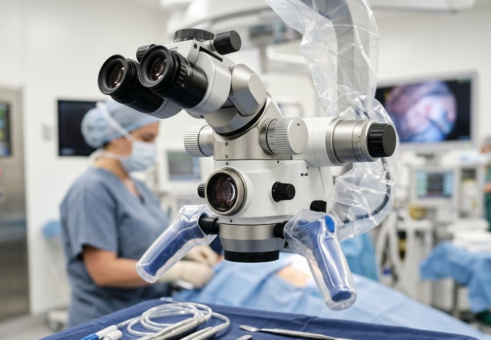

Flagship
Center • 2.2mm Micro-Incision
Femtosecond Cataract Surgery
Bladeless laser-assisted phacoemulsification with custom Toric, Trifocal, and EDOF intraocular lenses for rapid, stitch-free visual recovery.
Explore Cataract Care →